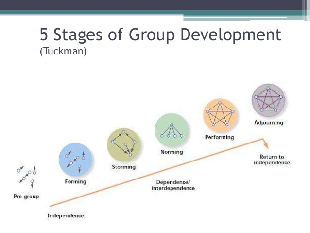

Knowledge Transfer
Goals
- Eagle eye view of Scrum
- Roles and Responsibilities in Scrum
- Ceremonies of Scrum Events
- Key Take aways
What is Scrum
From the Scrum Guide
Scrum is a framwork for developing, delivering, and sustaining complex products.
Cynefin Model

Characteristics of Scrum
- Lightweight, simple to understand, difficult to master
- Each component serve a specific purpose
- Empirical process: Transparency, Inspection, Adaptation
Characteristics of Scrum (cont)
- Individuals & Interactions over Process & Tools
- Working Software over Comprehensive Documentation
- Customer Collaboration over Contract Negotiation
- Responding to Change over Following a plan
Scrum Values
- Respect
- Openness
- Courage
- Focus
- Commitement
Important parts of Scrum
Retrospective is the most important part of Scrum. Backlog refinement is the second most important.
Scrum Team
- Product Owner : Responsible for the product backlog
- Development Team : Responsible for the increment (sprint deliverable)
- Scrum Master : Responsible for promoting and supporting Scrum. Servant-leader
Scrum Ceremonies
- The Sprint : Time-box of the development of a "done", potentially releaseable product Increment
- Sprint Planning : Planning of what work will be performed in the Sprint
- Daily Scrum : Time-box to forecast the the next 24-hours of work of the Dev Team
- Sprint Review : Demo to inspect the Increment and adapt the P.B.
- Scrum Retrospective : Vent session : Inspection of the last sprint and create plan for improvements
Take Aways
Reasons Sprint Teams fail
- Routinely carrying over work from one sprint to the next
- They can't work quality into a Sprint
- Lousy Product Backlog
50% of work can be a waste
Tuckman Model
Transparency
TODO
Change
TODO
Say no
Empowerment Bill of Rights
- Build the person up
- Clearly frame the Empowerment
- Give contraints
- Give advice
- Test it
Speed round
- "
Fail" => "Learn" - Eliminate waste
- These roles are full time roles
- Product owner should have been Backlog owner
- Should have a $1000/yr budget for team building
- Multitasking is HORRIBLE
Things to consider
- What about management doing Scrum?
- Or try to have 1 static scrum team. (Rotate members for group management)
- Getting a fulltime "Product Owner" role involved.